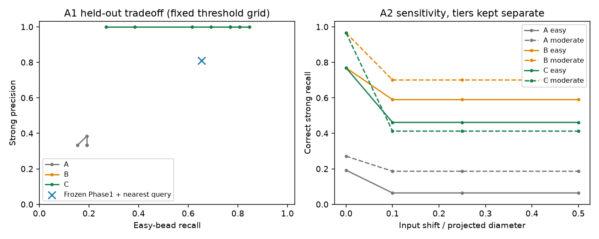
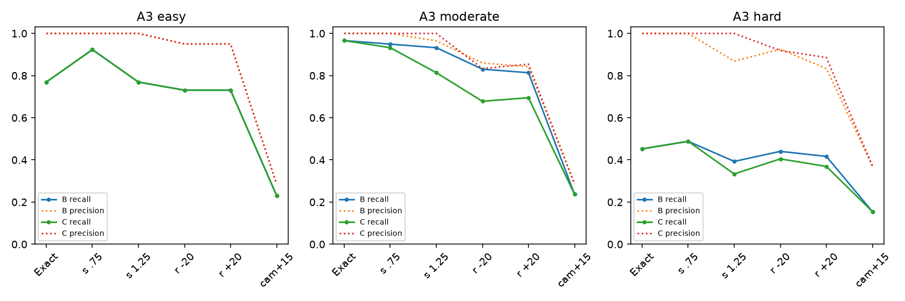
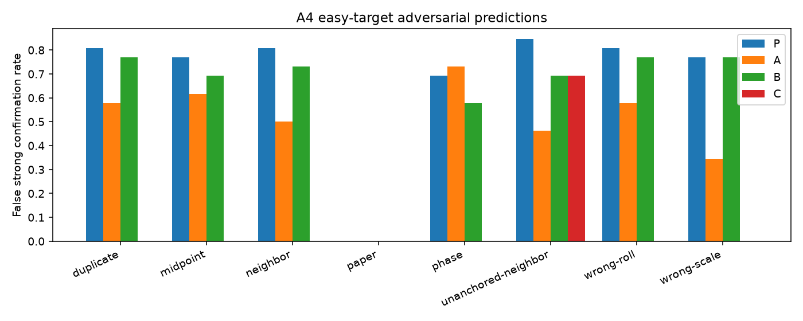

Left: original pixels. Right: independently switchable evidence and model layers. Actual-photo results are conditional support judgments, with no verified identity accuracy.
Photographic locations are interior centroids. Orange boundaries and model centers are hypotheses. The violet radius is an engineering uncertainty estimate, not a calibrated confidence interval. A strong result does not certify a construction identity.


